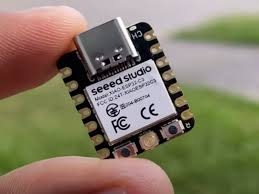

Decentralized Ground Sensing Network

The Decentralized Ground Sensor Network is designed to be a robust network of nodes that use a mesh network to communicate and is extremely cost effective. The idea behind this is a way to send data and have more robust networks by sharing the data throughout the sensors to prevent data loss. This network also works to minimize the distance you need to communicate back to the database by finding which node is closest to the database and then using that node to transmit the entire network's data back to the database. This allows many of the sensors to run on less power and one sensor needs to use higher power communication to the home database.
Key Features
- Efficient Transmission: Finds the closest node to the server's latitude and longitude, this is the node which will send all of the networks data to the server.
- Adaptive Transmission: If the main transmission node goes out of commission then the next closest node with now be the transmission node.
- Adaptable To Different Sensors: Can change out the sensor for other sensors so you can use different types of sensors with the network with minimal change to the code.
Technologies Used
- Mesh Network:
- Socket Connection: Temporary Socket connection to the server but can easily be changed to a LORA connection if necessarry.
Check out the Project on GitHub